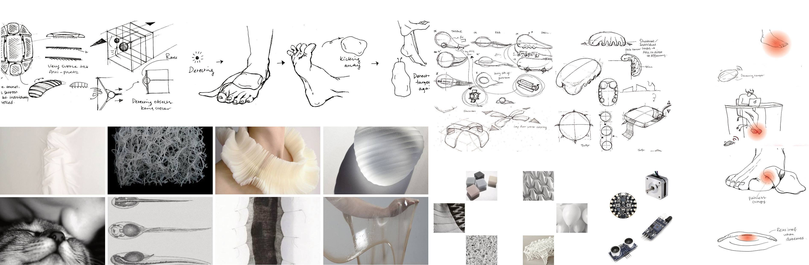
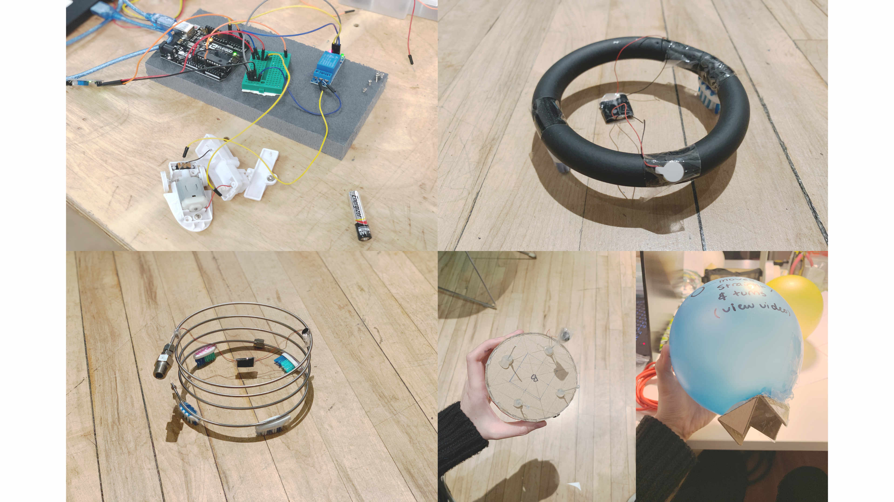
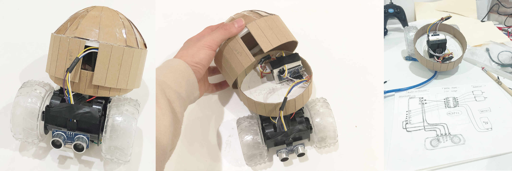
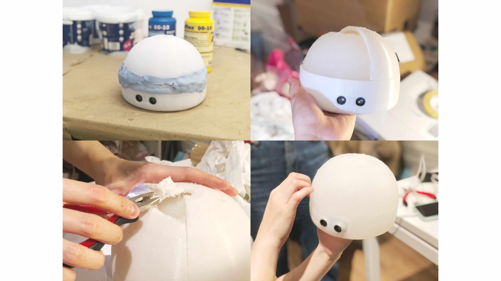
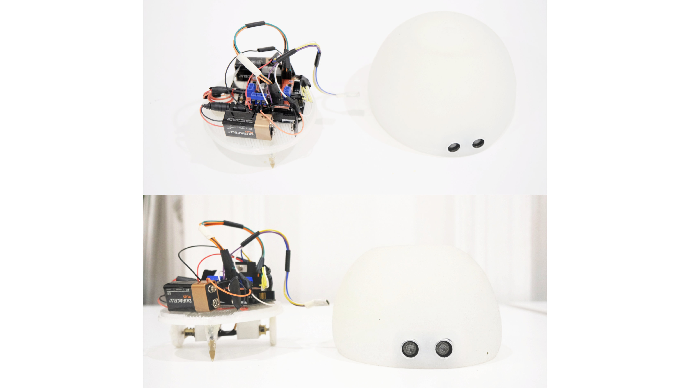

NIKU (ニク) is a clingy and attention-seeking robot companion who tracks down and headbutts human feet non-stop. Through this mildly annoying yet loving interaction, we hope to fill the human psychological need of being wanted in this ever isolating society.
Process
The initial concept was to create a soft robotic that is sticky and always latching on human foot. However, this concept was rather unrealistic due to the time contraints (3 weeks).
Instead of diving into soft robotics (which is a difficult task for a 3-week project), a soft outter shell with electronic internal hardware is sufficient to achieve our desired behaviours on the robot.
 Moodboard at concept stage
Hence, NIKU's form design and internal hardware engineering were revolved around three key behaviours that we narrowed down to - clumsy, clingy and annoying.
We made a lot of rapid prototypes to test out different sensors (IR, Ultrasonic, Thermal) and to experiment with a variety of moving mechanics (vibration, airflow, 2WD, 3WD, 4WD). We were also concurrently testing out different orientations for the physical appearance of the robot.
 Rapid and efficient experiments on moving mechanics and forms
After lots of rapid prototyping and iterations, we decided to drive Niku with the following setup.
Internal hardware wise, our requiements are simple: compact, minimal and it MUST WORK on demo day.
 Work-like prototypes by hacking toys (lots of tear-down and soldering work)
*insert notepad for final design*
NIKU final design + render
 Making silicone casing with 3D printed mold
 Hardware integration and final output
Mechatronics
NIKU's movement is dependent on the proximity reading from its eyes (an ultrasonic sensor). The void loop () logics are as follows ↓
• If the distance reading > 80cm, arduino sends PWM output to the left DC motor to drive left wheel foward - NIKU rotates to the right to search for targets around it. • If the distance reading < 80cm but > 5cm, arduino sends alternating PWM signals to 2 DC wheels - NIKU moves forward with one wheel driving forward at a time. • If the reading < 5cm, arduino first sends forward signals to drive both DC motors forward and then sends reverse signals to both - NIKU charges forward and then reverse.